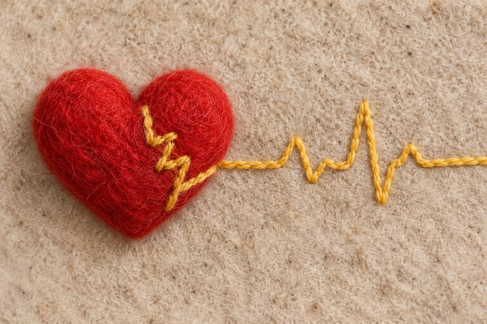

心律不整電燒健保給付嗎？自付差額怎麼看

本篇重點
心律不整的電燒有健保給付：一般射頻導管由健保負擔，心房顫動用的冷凍或脈衝消融導管，以及具壓力感應功能的射頻導管，則要自付差額。我在門診，很多病人來看診的主訴是心跳突然飆快、胸悶，聽到醫師提到電燒，先問的常是健保有沒有給付。電燒（醫學上稱導管消融）是把導管經血管送進心臟，用熱、冷或脈衝電場在異常電路上留下一小片疤，阻斷錯誤的電訊號。
心律不整電燒，健保給付到什麼程度？
健保署規定，電燒使用的一般射頻導管（不具壓力感應功能的逐點燒灼導管）由健保負擔；冷凍消融導管、脈衝消融導管和具壓力感應功能的射頻導管屬於自付差額特材，健保只付一般導管的額度，超出的部分由病人自付。其中冷凍與脈衝消融導管目前都限用於心房顫動的肺靜脈隔離（把肺靜脈入口的異常電訊號隔開）。
自付差額只針對導管這一項材料，手術費、病房費不在其中。這篇文章不寫金額，因為差額依醫院和導管而不同，金額請以醫院公開的資料和健保署公告為準。
哪些電燒導管要自付差額？
要自付差額的是冷凍消融導管、脈衝消融導管與具壓力感應功能的射頻導管，另外部分高密度標測導管（健保分類為心臟診斷用電生理導管，用來描繪心臟電訊號）也列在同一類自付差額特材；不具壓力感應功能的一般射頻導管由健保負擔，不用補差額。冷凍消融導管從 2017 年 11 月 1 日起列為自付差額，脈衝消融導管從 2025 年 12 月 1 日起列為自付差額。
| 項目 | 健保怎麼處理 | 用在哪裡 |
|---|---|---|
| 一般射頻導管（逐點燒灼） | 健保負擔，不用補差額 | 電燒的標準導管，也是健保計算給付的基準 |
| 具壓力感應功能的射頻導管 | 自付差額 | 適應症和一般射頻導管相同，能即時量測導管尖端和心壁的接觸力 |
| 冷凍消融導管 | 自付差額，2017 年 11 月 1 日起 | 心房顫動的肺靜脈隔離，導管前端是氣球狀，以冷凍方式環形處理 |
| 脈衝消融導管 | 自付差額，2025 年 12 月 1 日起 | 限心房顫動的肺靜脈隔離 |
| 部分高密度標測導管（心臟診斷用電生理導管） | 自付差額 | 描繪心臟電訊號的診斷用導管，不是用來燒灼 |
| 手術費、病房費 | 不屬於自付差額 | 導管以外的費用，照一般規定計算 |
| 金額 | 本文不寫 | 依醫院公開資料與健保署公告 |
脈衝消融導管的使用限制與申請流程，另外寫在脈衝消融術費用：健保與自付差額怎麼看；三種技術在手術上的差別，可以看心房顫動電燒怎麼選？脈衝場、冷凍、射頻。
自付差額是什麼意思？手術前會怎麼說明？
自付差額是指健保先負擔一般導管的額度，病人選用較貴的特殊導管時，只補超出的差額，並不是整項改成全自費。健保署規定，醫院要在手術前 2 天（緊急情況除外）交付說明書，由醫師說明這種導管的特性和費用，病人考慮後再簽同意書。
也就是說，要不要選特殊導管，不是手術當天才臨時決定。我在門診會先確認心律不整的種類和該不該電燒，再把一般導管與特殊導管各自的好處和限制講清楚，讓病人帶回去想。
想知道實際要付多少，可以去哪裡查？
實際金額要看醫院公開的自付差額特材品項與收費，也可以到健保署的自費醫材比價網查詢。醫院依規定必須公開這些品項和收費，病人不用等到手術前才知道。
- 先問醫師：這次評估用的是哪一類導管、是否符合健保的給付條件。
- 再看說明書：手術前 2 天拿到的說明書會寫導管特性與費用。
- 有疑問就先不簽：考慮清楚再簽同意書，不用當場決定。
掛號看電燒前，可以先準備什麼？
掛號前值得先備齊的是把發作時的心電圖、手機或手錶量到的心跳紀錄、目前吃的藥帶來。電燒適不適合，要先看心律不整的種類、發作頻率與心臟結構，導管怎麼選是之後的事；想先認識各種心律不整，可以看心律不整症狀怎麼分？太慢、亂跳、太快。
可以到新竹馬偕心臟內科門診找我，沒有轉診單也可以掛號，有轉診單的話一併帶來。我的門診時間與掛號。心房顫動的電燒流程可看心房顫動電燒是什麼？風險、流程與術後，一般心導管電燒的做法可看心導管電燒手術怎麼做？，電燒前為什麼常先做檢查可看心臟電生理檢查是什麼？。
常見問題
心律不整電燒健保給付嗎？
有。一般射頻導管的電燒由健保負擔；心房顫動用的冷凍與脈衝消融導管，以及具壓力感應功能的射頻導管，是自付差額，只補導管那一項的差額。
做心房顫動電燒一定要選自付差額導管嗎？
不一定。一般射頻導管由健保負擔，是否選用自付差額導管，由病人在手術前聽完醫師說明、考慮後再決定，也要符合健保署公告的給付條件。
電燒的自付差額包含手術費和病房費嗎？
不包含。自付差額只針對導管這一項材料，手術費與病房費不屬於自付差額；實際金額請看醫院公開資料與健保署比價網。
本文為一般衛教，不能取代醫師的個別評估；是否適合電燒、能否符合健保的給付條件，要由心臟專科醫師依心律不整種類、心電圖與病史判斷。給付條件會調整，請以健保署公告的新版為準。
參考資料
- 衛生福利部中央健康保險署：健保自付差額特材類別（治療複雜性心臟不整脈特殊功能導管，含 2025 年 12 月 1 日起之脈衝消融導管）
- 衛生福利部中央健康保險署：自付差額特材類別「治療心房顫動之冷凍消融導管」作業彙編（民眾篇）
- 衛生福利部中央健康保險署：自付差額特材類別「治療心房顫動之脈衝消融導管」作業彙編（民眾篇，2025 年 11 月）
- 衛生福利部中央健康保險署：全民健康保險特殊材料給付規定（B104-3 冷凍消融導管、B104-7 脈衝消融導管）
- 衛生福利部中央健康保險署：自付差額特材類別「具壓力感應功能之立體定位(3D)灌注冷卻式診斷電燒紀錄導管」作業彙編（民眾篇）
- 衛生福利部中央健康保險署：健保自付差額特材類別一覽
- 衛生福利部雙和醫院：健保部分給付「治療複雜性心臟不整脈特殊功能導管」品項表（114.05.08 更新）
- Cardiac ablation procedures（MedlinePlus，美國國家醫學圖書館）
- 衛生福利部中央健康保險署：財團法人醫藥品查驗中心醫療科技評估報告（113SMD10005 可控式鞘管，含射頻、冷凍、脈衝消融技術比較）
每個人的狀況不同，文章不能取代門診評估。想知道自己適不適合，歡迎帶著過去的檢查報告來門診討論。